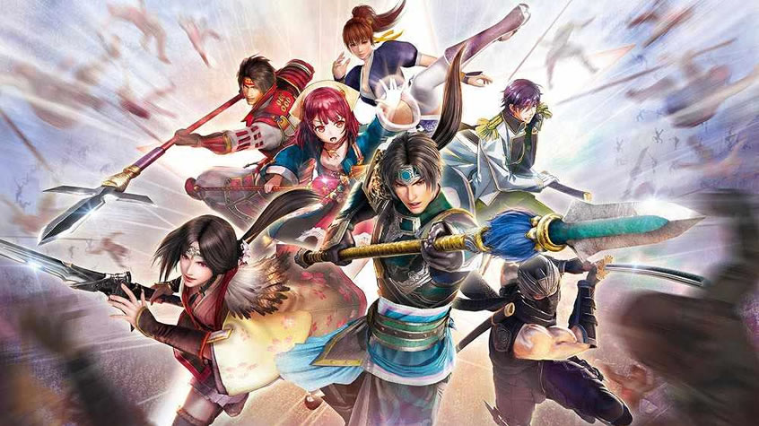

Romance of the Three Kingdoms (三國志, Sangokushi, lit. "Records of the Three Kingdoms") is a series of turn-based tactical role-playing simulation grand strategy wargames produced by Koei.Originating from Japan in 1985, fourteen installments of the game have been published in Japan, Taiwan, China, South Korea and North America to date. While the game's title as it was released in English refers to the historical novel Romance of the Three Kingdoms (三國演義) by Luo Guanzhong, the title as it was released in Japan and Chinese regions refers to the historical text Records of the Three Kingdoms (三國志) by Chen Shou.By the way, this serie is my favorite Three Kingdoms games. I started to know Romance of the Three Kingdoms XI in the first year of my high school and I tried any following game released by Koei.
Dynasty Warriors is a series of hack and slash action video games created by Omega Force and Koei. The series is a spin-off of Koei's turn-based strategy Romance of the Three Kingdoms series, based loosely around the Chinese historical text Records of the Three Kingdoms, from which it derives its name in Japanese. The first game titled Dynasty Warriors, Sangokumusō in Japan, is a fighting game and different from the rest of the series. All English titles are a number ahead of their Japanese counterparts due to the English localization of naming Shin Sangokumusō, a spin-off of the previously mentioned Sangokumusō game, as Dynasty Warriors 2. As a result of the fact that the original Sangokumusō title is a fighting game and has a different series title in Japan, it is not considered a formal entry in the Dynasty Warriors series by Koei Tecmo; the series's 20th anniversary is considered to be 2020 to mark two decades since the release of Dynasty Warriors 2. It is Koei's most successful franchise. As of February 2020, the series has sold more than 21 million copies worldwide.
Like its predecessors, Total War: Three Kingdoms is a turn-based strategy real-time tactics game. Set in the Three Kingdoms period (220–280), players control one of the game's twelve factions, who must eliminate other factions, unify China and become its ultimate ruler. These factions are led by warlords, such as Cao Cao, Liu Bei, and Sun Jian. In siege battles, players command both infantry and cavalry units. All the units featured in the game are divided into different retinues, with each led by a powerful general. The player can deploy up to three generals into the battlefield at once along with three in reserve, and players will only have access to the units that said generals can recruit